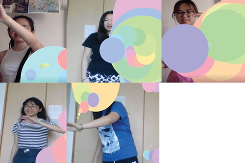

Struggles
The process of conducting it was quite a handful to do, since in the end it was Brice's program that we decided to the perform user-testing. His one requires a screen-capture app so that we can capture the gesture of the audience as well as the 'drawing' that they did based on their hand gesture. Since I live with 4 of my roomates, it seems logical that it was me that did the user testing. So I did. The first thing that I searched whose room I want to conduct the user testing in. I decided to use Sabrina's! Since her is the most well-lit compared to the rest of me and my roomates room.
Sabrina's Room
But besides that, I also tried and borrowed Sabrina's laptop. Since I'm using Windows and she uses mac, I thought it would be easier to use a laptop where there is already a pre-built screencapture app. Sabrina also helped me a lot in terms of setting up. I asked all of my roomate to help me with the user-testing, and they did!

Left - Right
Dea, Celine, Natasya
Brigitta, Sabrina